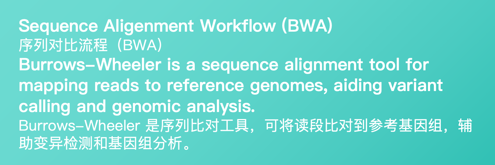

Sequence Alignment Workflow (BWA) Trigger
For private repositories - 私有仓库工作流触发器
Input path (FASTQ files)
*
:
Path containing FASTQ files
Reference genome path
*
:
Path to reference genome FA files
Genome index name
*
:
Name of reference genome index
Job name
*
:
Thread number
*
:
Run location
*
:
Specify the runner group (e.g. pipeline)
Secret key
*
:
Required for private repositories. Create token with "repo" scope at:
GitHub Token Settings
私有仓库必须提供Token，请创建具有"repo"权限的Token:
GitHub Token 创建页面
Sequence Alignment Workflow (BWA) / 序列比对流程（BWA）
Check Run Status / 查看运行状态
See Results / 查看结果